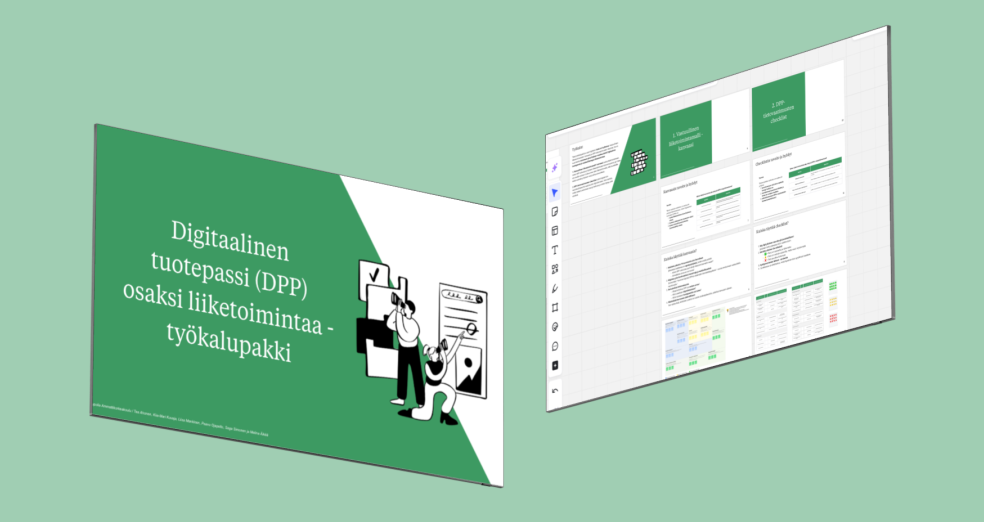
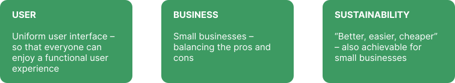
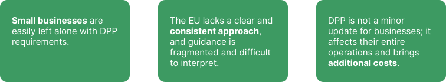

Solita
Digital Product Pass

Summary
A digital product passport (DPP) is an electronic information package attached to a product that provides information about the product's origin, materials and recyclability. The DPP will become mandatory for all textile products sold in the EU by 2027. This project was part of the course Planetary Business Development.
Role
Service Designer
Researcher
Timeline
6 weeks
Tools
Figma
Miro
Overview
The European Union is introducing a Digital Product Passport (DPP) system to promote transparency and sustainability in product lifecycles. The DPP will provide consumers and businesses with detailed information about products, including their origin, materials, and recyclability. This initiative aims to support the circular economy by making it easier to repair, reuse, and recycle products.
Our project needed to demonstrate user benefits, business value and sustainability value; how the DPP enables transparency, traceability and sustainability in the product lifecycle.
The Challenge
How might we create a digital product passport concept that benefits users, businesses, and sustainable development, while also promoting the circular economy?
The Process
The process began with a lot of reasearch on the subject, to really understand DPP and how it is going to work and what kind of regulations there will be. We benchmarked different brands that have already implemented DPP to their products. We also created use cases for different stakeholders.

In the research we also reviewed what are the key players, what different technologies could be used to implement DPP and what kind of business opportunities does it create for diffrent stakeholders. Also we examined circular value chain from different points of view: what are the user benefits, business values and sustainability values.

Our team contacted multiple brands for possible collaboration or interviews. We fortunately got to do one interview with company. In the interview we got a good insight of possible problems implementing DPP and how it can affect prices in the future.
Through the research, our team found out many times, that smaller businesses will have the most trouble implementing DPP into their business, as it brings extra costs and work needed to do.

With a focus on small firms, our team developed the final concept to assist these companies in incorporating DPP into their business.
The Outcome
Our final concept is a Digital Product Pass as a part of business -toolkit. This toolkit provides companies two different tools: the Responsible Business Model Canvas and the DPP Information Requirements Checklist. They are designed to support small businesses on their journey towards a Digital Product Passport and more responsible business practices, integrating responsibility as a key part of business inspired by the DPP, identifying new business opportunities, and serving customers better
The Responsible Business Model Canvas helps you understand how the DPP affects your company's business as a whole and how it can be used to create value for both your business and your customers, while supporting your company's responsibility goals.
The DPP information requirements checklist serves as a practical checklist for meeting EU requirements. You can mark which information about your products you already have and which you still need to find out.
In addition to these tools, the toolkit provides additional infromation on terminology and where to get more support for the integrations, such as extra funds.


Reflection
This project really gave us a challenge with a more complex subject and a lot of research to do. We had some stress with the schedule but managed to finish this project in time. I'm satisfied with the outcome and feel like this assignment gave me a lot of insight on service design.
I really enjoyed the sustainable point of view in designing, and I wish to do more similar work in the future.
Feedback
"Solita offered the digital product passport as a topic for an assignment on Metropolia University of Applied Sciences' Planet Centric Design course, where digital design students created concepts that promote responsibility. The team took an interest in the topic, did extensive background work, and clarified the concept of the digital product passport from the perspectives of users, business, and responsibility. As a result, the students created a toolkit to promote the adoption of the digital product passport. In the project, the team found a real problem to solve and created a concept to solve it, i.e., to facilitate the adoption of the digital product passport. I can recommend the team members for various design and responsibility tasks in the future as well!"
Saana Tikkanen, Strategic Designer, Sustainability Lead, Solita